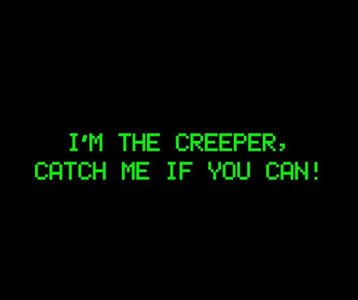

ínicio
História
Sobre
Quiz
Curiosidades
Curiosidades
O primeiro vírus de computador
O vírus Creeper, criado em 1971, é considerado o primeiro vírus da história. Ele exibia a mensagem: “I'm the creeper, catch me if you can!”.

O hacker mais famoso da história
Kevin Mitnick foi um dos hackers mais conhecidos do mundo e conseguiu invadir sistemas de grandes empresas antes de se tornar consultor de segurança.
WhiteHat
Nem todo hacker é criminoso. Os chamados White Hats ajudam empresas a encontrar falhas de segurança.
A origem da palavra “hacker”
O termo surgiu no Instituto de Tecnologia de Massachusetts (MIT) e originalmente significava alguém muito habilidoso em tecnologia.
Uma senha fraca pode ser descoberta em segundos
Senhas simples como “123456” ou “senha123” podem ser quebradas muito rapidamente por programas especializados.